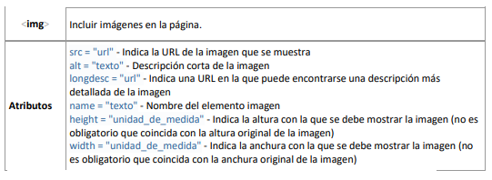

Imágenes para la web
Tipos de imágenes
A grandes rasgos, hay dos tipos de imágenes digitales:
Las imágenes vectoriales son imágenes constituidas por objetos geométricos autónomos (líneas, curvas, polígonos,...), definidos por ciertas funciones matemáticas (vectores) que determinan sus características (forma, color, posición,...)
Las imágenes de mapa de bits están formadas por una serie de puntos (píxeles), cada uno de los cuales contiene información de color y luminosidad. Salvando la diferencia, podemos compararla con un mosaico y sus teselas.
Las imágenes vectoriales se crean con programas de diseño o dibujo vectorial (Adobe Ilustrator, Corel Draw, Inkscape…) y suelen usarse en dibujos, rótulos, logotipos... Su principal ventaja es que una imagen vectorial puede ampliarse sin sufrir el efecto de “pixelado” que ocurre en las imágenes de mapa de bits al aumentarse.
Formatos de imágenes
Uno de las principales decisiones a la hora de incluir gráficos en la web será elegir el formato correcto para cada tipo de imagen de manera que se logre una correcta relación entre la calidad visual de la misma y su “peso” en Kb.
Los formatos de imágenes web más usados son .gif, .jpg y .png, todos ellos son “mapa de bits”:
- GIF (Graphic Image File Format): es un formato de archivo sin pérdida, es decir, se conserva cada pixel de la imagen original, lo que implica que el tamaño suele ser mayor que en formatos .JPG. No obstante, para gráficos sencillos con pocos colores es muy eficiente. Sin duda su mayor ventaja frente a los otros formatos es que permite crear animaciones.
- JPEG (Joint Photographic Experts Group) o JPG: comprime mucho más las imágenes que los formatos .GIF, por lo que los archivos pesan menos. Es excelente para trabajar con fotografías de muchos colores y texturas, mantiene la calidad con pesos de imagen realmente bajos. Como inconveniente diremos que pierde algo de información y puede afectar a su calidad, pero en la mayoría de los casos no es apreciable a simple vista. No permite crear imágenes animadas.
- PNG(Portable Network Graphics): este formato surgió como alternativa a .GIF debido a algunos problemas legales que empezaron a surgir en su uso. Es, por tanto, muy similar a éste, salvo que no permite crear animaciones. Proporciona un formato compresión de imágenes sin pérdida.
Formatos de imagen vectoriales: aún no tan populares en la web
Las imágenes vectoriales están especialmente indicadas para su aplicación en páginas web, ya que no necesitan tanto espacio de almacenamiento como los mapas de bits. Los formatos para ello no describen cuáles son los porcentajes de color que un píxel tiene en cada imagen, sino los objetos de los que se compone la imagen. Se engloban aquí las superficies redondas y torcidas, el texto, las líneas rectas y dobladas, etc., y su posición, sus dimensiones, sus colores y otras características.
Software para procesar imágenes
Adobe Photoshop
Photoshop es, sin duda alguna, el programa de retoque fotográfico estrella. Se utiliza para modificar imágenes digitalizadas, como fotografías. También se usa para crear y editar fotos y gráficos. Existen muchas opciones que esta herramienta te permite editar, entre ellas están el color, la luz o el fondo entre muchos otros.
Sistema operativo:Windows y Mac OSforma
The GIMP
GIMP es posiblemente la mejor alternativa gratis, la más potente y profesional a Photoshop. Es unprograma referente para retocar fotos por sus características muy avanzadas. Ofrece una potente capacidad de manejar capas, filtros, ajustes de color, herramientas para dibujo o pintura, etc.
Sistema operativo:Windows y Mac OS
Sistema operativo:Windows y Mac OSforma
Pixelmator
Es un programa de edición de imágenes rápida y potente exclusiva para Mac y una de las alternativas más sólidas al Photoshop. Su funcionamiento es muy sencillo y su reducido precio lo hace muy apetecible si estás pensando comprar un programa de retoque de fotos.
Sistema operativo:Mac OS
Paintshop pro
El Paint Shop Pro es otra buena alternativa si quieres comprar un programa de retoque de imágenes. Es una herramienta que puede ser utilizada por un usuario medio hasta un profesional de la fotografía. Es un programa de edición de fotos muy buena para crear o mejorar imágenes. Cuenta con unaherramienta muy potente como es el HDR (High Dynamic Range) y de reconocimiento de caras.
Sistema operativo:Windows
PhotoScape
Photoscape es uno de los mejores editores de imágenes gratuitos para principiantes. Es una herramienta fácil y sencilla que permite corregir y mejorar tus fotos rápidamente.
Sistema operativo:Windows y Mac OS
Paint.net
Paint.net es un software de edición de fotografía potente y sencillo. Cuenta con una interfaz de usuario intuitiva e innovadora, con soporte para capas, efectos especiales, y una amplia variedad de herramientas útiles y potentes de edición de fotos.
Sistema operativo:Windows
Canva
Además, si lo que se quiere es retocar fotografías de una manera muy intuitiva y aplicar filtros de todo tipo a golpe de clic, Canva tiene un apartado específico para el retoque de fotografías. Permite recortar imágenes, ajustar el brillo, rotar y voltear la fotografía, aplicar más de 10 filtros distintos y mucho más. Por la facilidad de usabilidad de la interfaz, y la variedad de opciones que ofrece, es una herramienta muy recomendable si quieres retocar fotografías rápidamente y de manera online.
Sistema operativo:Windows y Mac OS
Optimización de imágenes para la web
Antes de tratar la optimización de imágenes conviene repasar algunos conceptos clave sobre imagen digital.
Resolución
Es el número de píxeles o puntos que contiene una imagen por pulgada lineal. Este valor se expresa en ppp (píxeles por pulgada). Cuanto más píxeles por pulgada contenga una imagen, mayor será su calidad y en consecuencia mayor número de bytes ocupará su archivo.
Profundidad de color
La profundidad de color o bits por píxel (bpp) es un concepto de la computación gráfica que se refiere a la cantidad de bits de información necesarios para representar el color de un píxel en una imagen digital o en un framebuffer. Debido a la naturaleza del sistema binario de numeración, una profundidad de bits de n implica que cada píxel de la imagen puede tener 2n posibles valores y por lo tanto, representar 2n colores distintos
Debido a la aceptación prácticamente universal de los octetos de 8 bits como unidades básicas de información en los dispositivos de almacenamiento, los valores de profundidad de color suelen ser divisores o múltiplos de 8, a saber 1, 2, 4, 8, 16, 24 y 32, con la excepción de la profundidad de color de 10 o 15, usada por ciertos dispositivos gráficos.
Consejos sobre el tratamiento de imágenes para el diseño web:
- Conviene definir una resolución de imagen no superior a 96 ppp. Es la resolución predeterminada de las pantallas de ordenador.
- En ocasiones puede interesar reducir el número de colores de la paleta porque ello supone disminuir el tamaño del archivo.
- Conviene utilizar un programa de tratamiento de imágenes para definir las dimensiones concretas de una imagen antes de insertarla en una página web.
- Es recomendable guardar los originales de las imágenes favoritas en formato BMP, TIFF ó JPEG sin comprimir. A partir de ellas se puede crear una copia en formato GIF, PNG o JPEG con las dimensiones, resolución y paletas optimizadas para publicarlas en la web.
- Las imágenes GIF son más adecuadas para dibujos, gráficos y logotipos. Son aquellas donde predominan los colores sólidos y una paleta con un número reducido de colores.
- Las imágenes JPEG se adaptan mejor a fotografías e imágenes con degradados complejos
Herramientas de optimización de imágenes
Optimizar con Adobe Photoshop
El rey del retoque fotográfico nos ayuda con esta tarea de preparar nuestras imágenes para la web.
Kraken.lo
Esta aplicación web nos ayuda a comprimir las imágenes manteniendo una calidad sorprendente, una de las mejores alternativas gratuitas que podemos tener
TinyPNG
Esta aplicación web utiliza técnicas de compresión con pérdidas inteligentes para reducir el tamaño de archivo de tus archivos PNG.
TinyPNG
Esta aplicación web utiliza técnicas de compresión con pérdidas inteligentes para reducir el tamaño de archivo de tus archivos PNG.
PunyPNG
PunyPNG es una herramienta gratuita de optimización de sitios web que reduce drásticamente el tamaño de archivo de sus imágenes sin pérdida de calidad.
Inclusión de imágenes en la web. Etiqueta <img>
Las imágenes son uno de los elementos más importantes de las páginas web. De hecho, prácticamente todas las páginas web contienen alguna imagen y la mayoría incluyen decenas de imágenes. Dentro de las imágenes que se pueden incluir en una página HTML se deben distinguir dos tipos: las imágenes de contenido y las imágenes de adorno.
Las imágenes de contenido son las que proporcionan información y complementan la información textual. Las imágenes de adorno son las que se utilizan para hacer bordes redondeados, para mostrar pequeños iconos en las listas de elementos, para mostrar fondos de página, etc. Las imágenes de contenido se incluyen directamente en el código HTML mediante la etiqueta img> y las imáge nes de adorno no se deberían incluir en el código HTML, sino que deberían emplearse hojas de estilos CSS para mostrarlas.
A continuación se muestra la definición de la etiqueta <img>, utilizada para incluir las imágenes en las páginas HTML:
